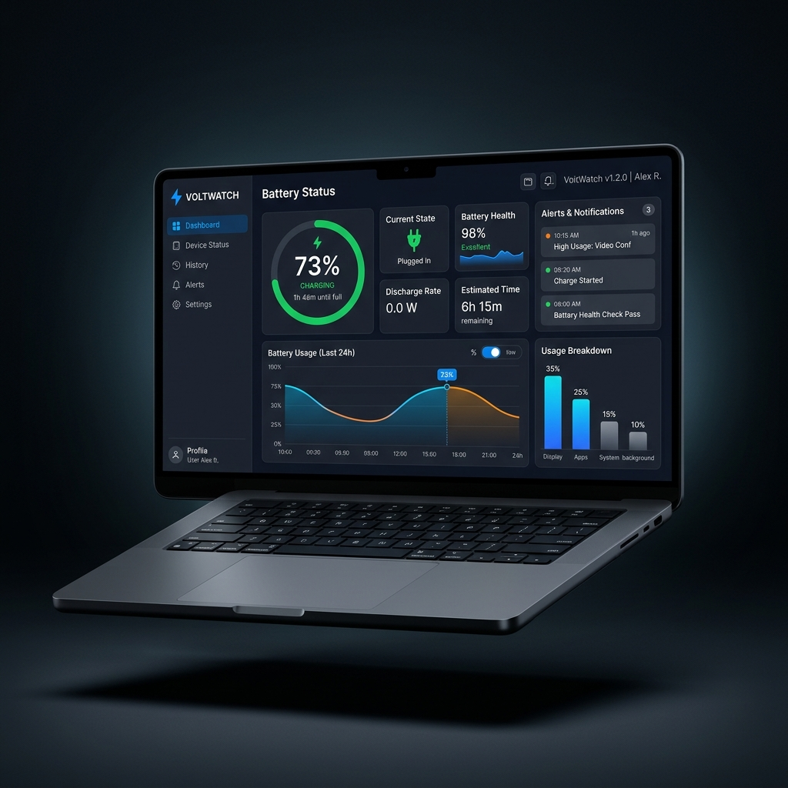

VoltWatch monitors your remote trading laptop's battery, MetaTrader 5 status, and power events in real-time — with instant alerts before anything goes wrong.

Built specifically for traders who need their laptop online and charged — always.
Live battery percentage, charging state, AC connection, and MetaTrader 5 status updated every 30–60 seconds.
Configurable low-battery thresholds (e.g. 80%, 50%, 20%), AC disconnect warnings, offline detection, and MT5 alerts.
Receive browser push notifications on any device — phone, tablet, or second laptop — even when the tab is closed.
Battery history charts, AC cycle analysis, uptime tracking, and rollup insights across 24h, 7d, or 30d windows.
Set a quiet window so alerts don't wake you at 3am — unless it's a critical battery level that can't wait.
Full multi-user support — each account sees only their own devices, data, and alert history. Nothing shared.
No servers to manage. No complex config. Just install the agent and you're done.
Register with your email — no credit card needed. Verify your address and sign in to your personal dashboard.
Go to the Devices page, create a new device, and copy the auto-generated secret token. It's shown once — keep it safe.
Run the lightweight Python agent on your trading laptop. It reads battery data and sends heartbeats to VoltWatch every 30s.
VoltWatch watches your laptop so you don't have to. The moment something changes, you'll know about it — wherever you are.
It's free, open source, and takes less than 5 minutes to set up. Your first alert could save your next trade.